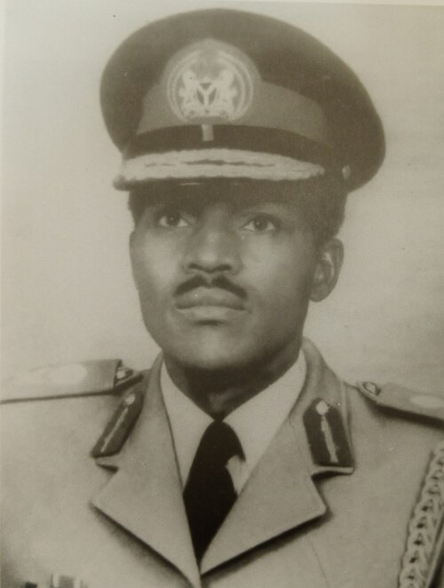

Gen Muhammadu Buhar
The Platoon Commander of the 2nd infantry Battalion, Abeokuta

Here's a time line of Gen Muhammadu Buhari:
- 1942 - Born on 17 December in Daura, now in Katsina State, Nigeria.
- 1947 - He attended Qur'anic school, where he helped in rearing cattle. He had his primary education in Daura and Mai'Adua, and graduated in 1953
- 1956 - He was admitted into Katsina Middle School (later renamed to Katsina Provincial Secondary School), where he had his secondary education from 1956 to 1961. During his sixth form, he served as the house captain and headboy of the school.
- 1960 - He was awarded scholarship by the Elder Dempster Lines for a summer visit to the United Kingdom.
- 1961 - Buhari wanted to pursue a medical degree to become a doctor; the only option at the time was to study Pharmacology at the Nigerian College of Arts, Science, and Technology in Zaria, which would take him many years. His nephew Mamman Daura advised him to join the Nigerian military and pursue higher education there.
- 1962 - At the age of 19, Buhari was one of 70 boys selected for recruitment into the Nigerian Military Training College (NMTC) Which was renamed Nigerian Defence Academy.
- 1963 - at the age of 20, he was commissioned a second lieutenant and appointed Platoon Commander of the Second Infantry Battalion in Abeokuta
- 1965 - He served as commander of the Second Infantry Battalion and was appointed brigade major of the Second Sector, First Infantry Division (April 1967 to July 1967)
- 1966 - Him alongside other officers from Northern Nigeria, took part in the July counter-coup, which ousted General Aguiyi Ironsi, replacing him with General Yakubu Gowon.
- 1968 - He was posted to the 4 Sector, also called the Awka sector, which was charged with taking over the capture of Onitsha from Division 2. The sector's operations were within the Awka-Abagana-Onitsha region, which was important to Biafran forces because it was a major source of food supply. It was in the sector that Buhari's group suffered a lot of casualties trying to protect the food supplies route of the rebels along Oji River and Abagana.
- 1970 - He was Brigade Major/Commandant, 31st Infantry Brigade From 1970 to 1971.
- 1971 - He married Safinatu Buhari (née Yusuf). They had five children together. He served as the Assistant Adjutant-General, First Infantry Division Headquarters, from 1971 to 1972.
- 1975 - In the 1975 military coup d'état, Lieutenant Colonel Buhari was among a group of officers that brought General Murtala Mohammed to power. He was later appointed Governor of the North-Eastern State
- 1976 - On 3 February 1976, the North Eastern State was divided into three states Bauchi, Borno and Gongola. Buhari then became the first Governor of Borno State from 3 February 1976 to 15 March 1976.
- 1977 - The Nigerian National Petroleum Corporation was created and he was appointed as its chairman, a position he held until 1978.
- 1978 - He was Military Secretary at the Army Headquarters and was a member of the Supreme Military Council from 1978 to 1979
- 1980 - At the rank of colonel, Buhari (class of 1980) attended the US Army War College in Carlisle, Pennsylvania, in the United States, and gained a master's degree in Strategic Studies.
- 1983 - when Chadian forces invaded Nigeria in the Borno State, Buhari used the forces under his command to chase them out of the country, crossing into Chadian territory in spite of an order given by President Shagari to withdraw.
- 1983 - Major-General Buhari was one of the leaders of the military coup of December 1983 that overthrew the Second Nigerian Republic. At the time of the coup plot, Buhari was the General Officer Commanding (GOC), Third Armoured Division of Jos The coup ended Nigeria's short-lived Second Republic, a period of multi-party democracy revived in 1979, after 13 years of military rule.
- 1985 - In August 1985, Major General Buhari was overthrown in a coup led by Major General Ibrahim Babangida and other members of the ruling Supreme Military Council (SMC). He was detained in benin city untill 1988.
- 1988 - In December 1988, after his mother's death he was released and retired to his residence in Daura. While in detention, his farm was managed by his relatives.He divorced his first wife in 1988 and married Aisha Halilu and they also had five kids together. In Katsina, he became the pioneer chairman of the Katsina Foundation that was founded to encourage social and economic development in Katsina State
- 2003 - In 2003, Buhari ran for the office of the president as the candidate of the All Nigeria People's Party (ANPP). He was defeated by the People's Democratic Party incumbent, President Olusẹgun Ọbasanjọ, by more than 11 million votes.
- 2007 - He ran for the office of the president again as the candidate of the All Nigeria People's Party and lost to the ruling PDP candidate, Umaru Yar'Adua, who hailed from the same home state of Katsina.
- 2015 - He ran in the 2015 presidential election as a candidate of the All Progressives Congress party and won.
- 2019 - He had a rerun and became 15th president of Nigeria, and 4th president in the fourth Nigerian Republic took place on Wednesday, 29 May 2019, following the 2019 Nigerian presidential election and marking the start of the second and final four-year term of Muhammadu Buhari as president and Yemi Osinbajo as vice president. It was the 8th presidential inauguration in Nigeria, and 6th in the fourth republic.
- 2025 - He died in a clinic in London at approximately 4:30 pm (15:30 UTC),[234] on 13 July 2025 and was buried at his home in Daura, Katsina State
buhari's life and leadership stand as testimony to the enduring impact that integrity,discipline and steadfast commitment to national service can have on the course of a nation's history and progress.
- Nigerian Statesman's Tribuna